Every community has big minds. We help them lead.
BMsP Africa is a youth development organisation in Kebbi State, Nigeria. We help young people understand themselves, build leadership and start enterprises that serve the people around them.

AwareThinkGrowLeadKebbi StateWe are just beginning, and you can start with us.
BMsP Africa is a founding-stage organisation. We begin with a pilot, and our full programs open in 2027. The people who join now help shape what we build.
Young people
Join the pilot, or ask to be on the list for the first 2027 cohort.
Mentors and volunteers
Share your skills with young people who are ready to learn from you.
Partners
Schools, businesses and institutions can host, fund or co-design our first sessions.
BMsP CBT Readiness Program
Introduces students to computer-based tests (CBT) ahead of JAMB, WAEC and NECO: the basics of CBT and how it works, with support in Mathematics and English Language.
Who it is for
Students preparing for JAMB, WAEC and NECO.
What it covers
The basics of computer-based tests and how they work, with support in Mathematics and English Language.
Before people change their communities, they must first develop their own minds.
The BMsP Africa premiseHow we work with young people
We start with the person, then grow outward to the community.
Unlock the mind
Self-awareness, identity and critical thinking.
Read the frameworkBuild the leader
Responsibility, character and the confidence to guide others.
Read the frameworkCreate the enterprise
Entrepreneurship, innovation and practical business skills.
Read the frameworkTransform the community
Jobs, businesses and solutions that serve the people around us.
Read the frameworkWho we serve
Our hope for 2035
By 2035, we expect to have helped a great many young Africans discover their potential, build enterprises and create opportunities for others.
We will share real progress here as we go.

Jeremiah Mathew MangaFounder and Executive Director
Meet the founder
Jeremiah is a Nigerian humanitarian, data analyst and youth development advocate. He founded BMsP Africa to help young people turn potential into productive action.